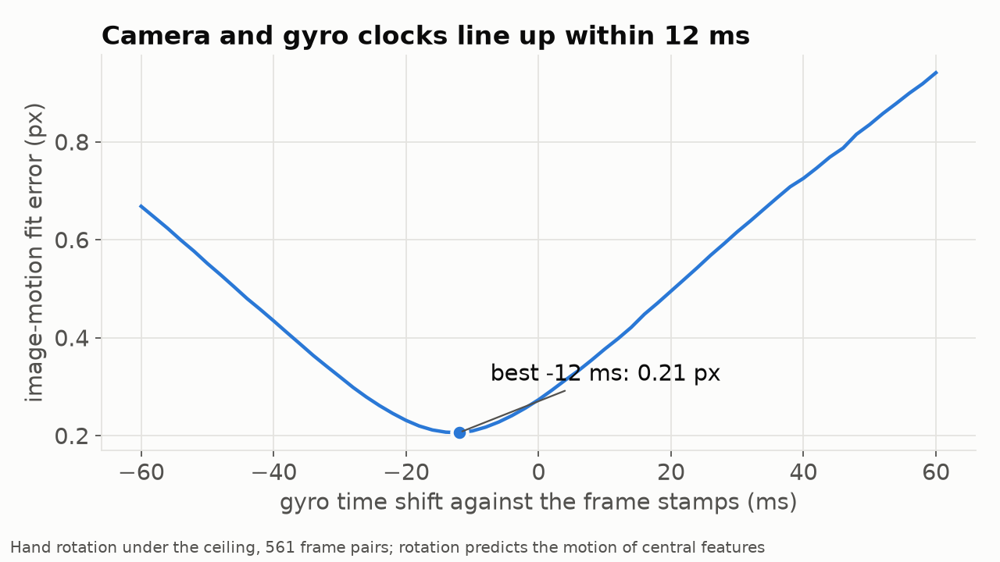
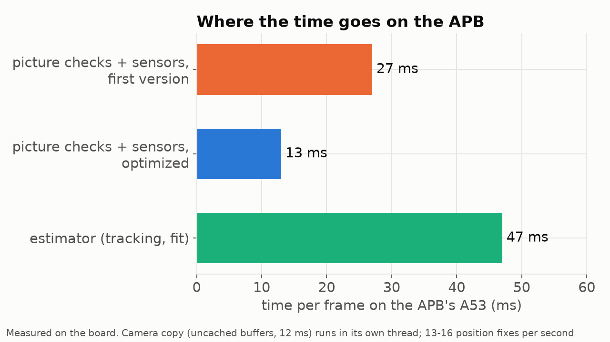
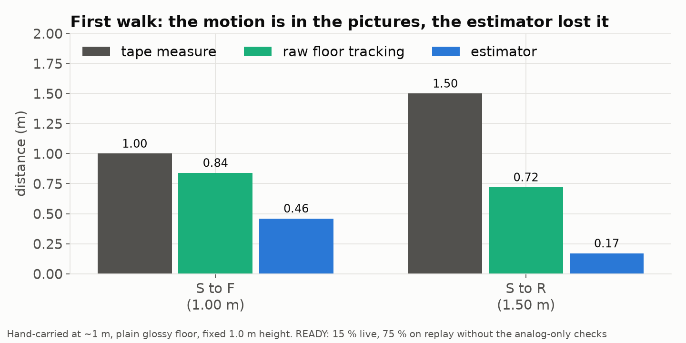

CONTESTED BATTLEFIELD AERIAL OPERATIONS CHALLENGE · GRAND FINAL
Holding position without GPS
on a 4-core ARM board
A rolling-shutter fisheye, the board’s own IMU, and only measured numbers.
[Team name] · [Names]
THE PROBLEM
Hold a spot with no GPS, using only what is on board
30 s
within 3 m sideways and 2 m in height, judged from the flight log
0
GNSS while the hold is engaged
~140°
rolling-shutter fisheye looking down (the datasheet said 114°)
4 × A53
all processing on the APB board, no laptop
The bench judge carries the drone at about 1 m; in flight the pilot climbs to 10, 20, 35, 50 or 75 m and flips the switch.
Source: Stage 2 participant package; camera field of view measured on the event aircraft
SENSOR FUSION
Camera, gyro and height become stick commands
Justice D camera
Orqa hardware
Capture and IMU timing
ours
Floor tracking estimator
ours, on OpenCV
MSP stick commands
ours
Betaflight ANGLE mode
flight controller
How it works: track floor points, give each picture row its own gyro attitude, scale by height, solve the move in metres, then turn the position error into roll and pitch commands while the pilot’s switch is on.
Not ours: OpenCV, numpy, Betaflight, Orqa’s Linux image. Ours: everything in blue.
Height: accelerometer during the lift plus picture scale [in progress]; the barometer was too noisy indoors
TIMING AND ROLLING SHUTTER
Every clock measured, not assumed
−12 ms
gyro against camera clock, from a hand rotation (fit error 0.21 px)
16.666 ms
between frames, 2 µs spread; stamped at the end of each frame
Rolling shutter: each picture row gets its own attitude from the 200 Hz gyro.
Bug found: the IMU driver’s stamps were 15 s off unless both streams started in one order.

Measured on the event aircraft: driver stamps (CLOCK_MONOTONIC), ICM-42605 at 200 Hz; readout time [to measure]
CALIBRATION
The datasheet lens would have made every distance wrong
17 %
datasheet focal length too high for the 1080p mode: distances 14 % short
0.17 px
checkerboard fit error on views the fit never saw
Two boards disagreed by 7 %. A rotation under the ceiling, checked against the gyro and needing no target, sided with the flat screen.

Equidistant fisheye fit (OpenCV) on 101 views; gyro method ours, from the ceiling rotation
APB COMPUTE
Where the time goes on four ARM cores
12 ms
to copy one frame: the camera buffers are uncached, so capture runs in its own thread
27 → 13 ms
picture checks and sensors per frame after optimizing
Attitude filter 30× faster with plain quaternion maths. 13–16 fixes per second today [to raise].

Measured on the APB (i.MX8M Plus, 4 × Cortex-A53): numpy 1.26, OpenCV 4.11 in /data
WHEN VISION DEGRADES
Our first walk failed, and the data showed why
Lens covered: NOT READY at once; the flight controller gets safe sticks (1500), never minimum values.
Analog-era checks fired on the digital camera: READY 15 % → 75 % once removed.
Lost motion: the estimator froze during its gaps; raw floor tracking kept it. Fix: [in progress].
Barometer read a 1 m lift backwards indoors: height now from the accelerometer during the lift.

Hand-carried walk at about 1 m over a plain glossy floor, carrier’s legs and ceiling-light reflections in view
RESULTS AND LIMITS
What we scored, and what is still hard
| Item | Pass condition | Result |
|---|---|---|
| B1 displacement | within 0.25 m of the tape | [TBD] |
| B2 loop return | within 0.3 m of zero | [TBD] |
| B3 height change | within 0.15 m of 0.5 m | [TBD] |
| C, D, E bench | signs, handover, cover, restart | [TBD] |
| G flight ladder | 30 s within 3 m / 2 m | [TBD: highest level] |
Still hard: plain glossy floors, the carrier in view, indoor barometer noise. Next: [one line].